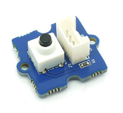
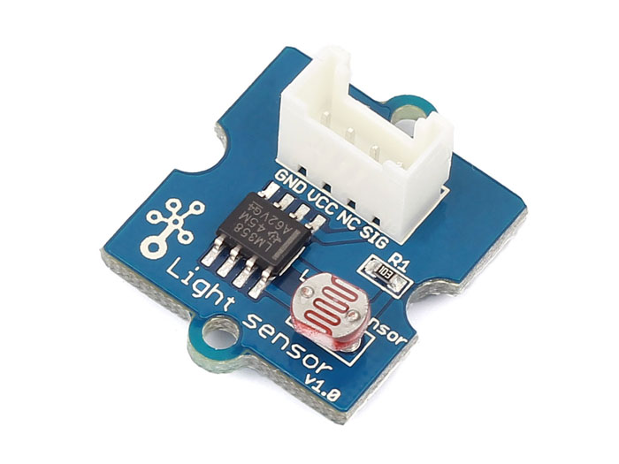
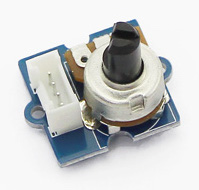
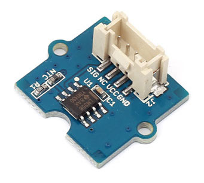
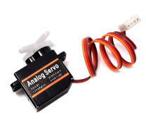
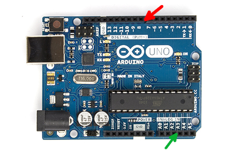

Grove Modules
Grove Base Shield

The Grove Base Shield (V2) connects your Arduino board to the other Grove modules. It has different kinds of connections:
- A0, A1, A2, A3
- Analog inputs that read from sensors, like the light sensor, temperature sensor, and rotation knob.
- D2, D3, D4, D5, D6, D7, D8
- Digital connections that control LEDs and servo motors and read from push buttons. To fade an LED (not just turn it on and off), use D3, D5, or D6.
- I2C and UART
- These are more complex connections that we don't use in the extension yet.
To connect a module to the shield, plug one of the Grove cables into the white connector on the module and one of the connectors on the shield. The cable only goes into the connector one way.
Grove Button
A button you can press
Grove Light Sensor
Measures light
Grove Rotation Knob
Control things by rotating the knob
Grove Temperature Sensor
Measures temperature
Grove LED

A small light
Grove Servo Motor
Moves its arm back and forth
Working w/ Basic Electronic Components
- A0, A1, A2, A3, A5
- Analog inputs (green arrow) that read from sensors, like the light sensor, temperature sensor, and rotation knob.
- 2, 3, 4, 5, 6, 7, 8, 9, 10, 11, 12, 13
- Digital connections (red arrow) that control LEDs and servo motors and read from push buttons. To fade an LED (not just turn it on and off), use D3, D5, or D6.